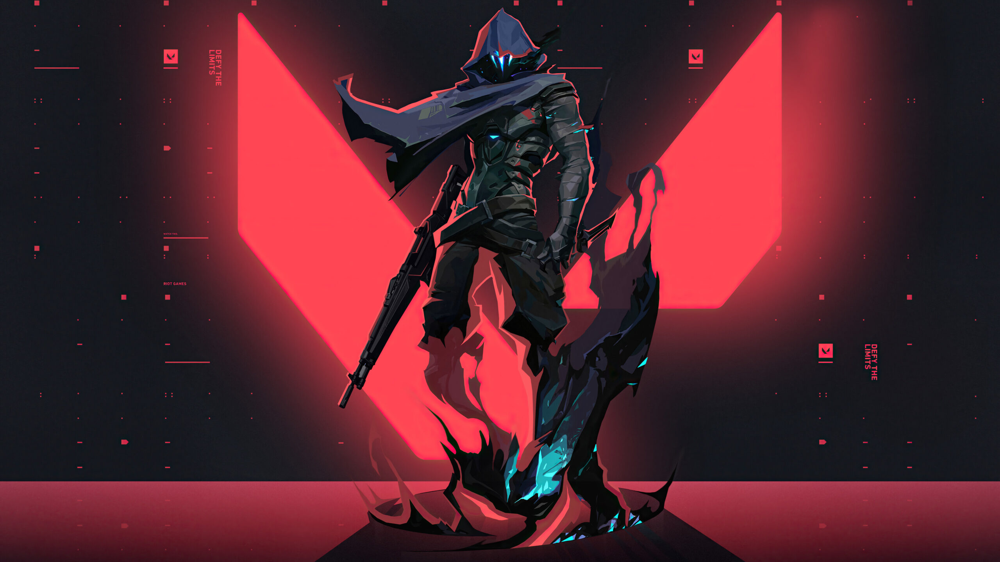

Size valorant ajanları hakkında bi bilgilendirme sayfası hazırladım.İyi okumalar.
Jett Anavatanı Güney Kore'yi temsil eden Jett'in çevik ve darbelerden kaçmaya dayalı dövüş tarzı, başkalarının alamadığı riskleri almasını sağlar. Her çatışmada üstünlüğünü belli eder ve rakipleri daha nerede olduğunu anlamadan onları kesip biçmeye başlar.
Raze Bomba gibi bir kişiliğe ve kocaman silahlara sahip olan Raze, aramıza Brezilya'dan katılıyor. Kafa göz dalan oyun tarzıyla düşmanları saklandıkları deliklerden çıkarmakta ve dar alanları ''bam bam bam'' temizlemekte üstüne yoktur.
Breach İnsanüstü güçlere sahip İsveçli Breach, düşman zemininde sert bir şekilde yolu açan, hedeflenebilir bir kinetik dalga gönderir. Sebep olduğu hasar ve darbe, savaşın dengelerini değiştirecek niteliktedir.
Omen Bir anının hayaleti olan Omen gölgelerin içinde avlanır. Düşmanlarını kör eder, savaş alanını boydan boya kat eder ve paranoyanın, onun ne taraftan saldıracağını anlamaya çalışan rakiplerinin damarlarında gezinmesini sağlar.

Brimstone Aramıza ABD'den katılan Brimstone'un hava araçları sayesinde takımı her zaman 1-0 öndedir. Gereken her türlü işlevselliği titizlikle ve güvenle sağlaması, muharebe alanında bu kumandanı eşsiz kılar.
Phoenix Aramıza Birleşik Krallık'tan katılan ve yıldızlardan aldığı gücü dövüş stilinin her noktasına yansıtan Phoenix, savaş alanını alevlerle ve patlamalarla aydınlatır. Arkasında destek olsun olmasın, bildiği gibi savaşmak için ileri atılacağından şüpheniz olmasın.
Sage Çinli ve kapı gibi Sage gittiği her yerde kendini ve takımını güvende tutar. Öldürülen silah arkadaşlarını hayata döndürme yeteneği ve agresif saldırıları bertaraf edebilmesiyle, cehennemvari savaş meydanında etrafına huzur verir.
Sova Rusya'nın uçsuz bucaksız tundralarında yetişen Sova düşmanlarını acımasız bir verimlilik ve titizlikle tespit eder, izlerini sürer ve onları yok eder. Özel yayı ve sıra dışı iz sürme yetenekleri ile ondan kaçsanız da asla saklanamazsınız.
Viper Amerikalı kimyager Viper zehir yüklü, çeşit çeşit kimyasal cihazıyla savaş alanını kontrol altında tutarken düşmanın görüşünü de sekteye uğratır. Avını zehriyle değilse bile aklıyla mutlaka avcunun içine alır.
Cypher Faslı bilgi uzmanı ve tek kişilik gözetleme ağı Cypher, düşmanın her hareketini bilir, her sırrını duyar ve her manevrasını görür. Cypher'ın gözleri hep üzerinizdedir.
Reyna Meksika'nın kalbinden kopup gelmiş Reyna teke tek çatışmalarda düşmanını ezer ve aldığı her skorla daha da coşar. Yapabilecekleri tamamen saf beceri gerektirir ve onu ciddi şekilde performansa dayalı kılar.
Killjoy Alman dâhi Killjoy, kendi icatlarından oluşan cephaneliğiyle savaş meydanını kontrol altına alır. Cihazlarının verdiği hasar rakiplerini durdurmaya yetmezse robotlarının yardımıyla rakiplerini zayıflatarak onların ortadan kaldırılmalarını kolaylaştırır.
Skye Aramıza Avustralya'dan katılan Skye, beraberinde getirdiği vahşi hayvan ordusuyla birlikte çatışmayı iyiden iyiye kızıştırıyor. Düşmana ayak bağı olan hayvanları ve takım arkadaşlarını iyileştirme yetisiyle, takımının gücünü pekiştiriyor ve takımdaki herkesi kolluyor.
Yoru Japon Yoru, gerçeklikte açtığı geçitlerden geçerek düşman hattına sinsice sızıyor. Yanılsamalardan ve kaba kuvvetten eşit oranda faydalanarak hedeflerini göz açıp kapayıncaya kadar indiriyor.
Astra Ganalı ajan Astra, kozmosun enerjisini kullanarak savaş meydanını lehine değiştirebiliyor. Astral yolculuğu üzerinde tam kontrole sahip olması ve engin stratejik öngörüsüyle, düşmanın bir sonraki hamlesinden her zaman birkaç ışık yılı önde.
Kay/o KAY/O, radyantları etkisiz hale getirmek için üretilmiş bir savaş makinesi. Düşmanlarının yeteneklerini sindirerek karşı koyma yetilerini bastırır. Böylece hem kendisini hem de takım arkadaşlarını korur.
Chamber Her daim şık ve tam teçhizat dolaşan Fransız silah tasarımcısı Chamber, ölümcül isabetliliğiyle rakipleri ortadan kaldırıyor. Özel yeteneklerini kullanarak görüş mesafesi sağlar, uzaktaki rakipleri avlar ve her plana mükemmel bir şekilde uyum sağlar.
Neon Filipinli Ajan Neon, şoke edici bir hızla öne atılır ve bedeninin ürettiği biyoelektrik dalgalarını düşmanların üstüne salar. Düşmanları gafil avlamak için yarışırcasına koşar ve hepsini yıldırım hızıyla indirir.
Fade Türk kelle avcısı Fade, düşmanların sırlarını gasp etmek için saf kâbus gücünü kullanır. Korkuyla uyum içinde çalışarak hedeflerini avlar ve hedeflerinin işini bitirmeden önce en büyük korkularını açığa çıkarır.
Harbor Hindistan'ın kıyılarından gelen Harbor, kadim teknolojilerle suya hükmederek sahada fırtınalar koparıyor. Dostlarını korumak ve düşmanlarını alt etmek için güçlü akıntılar ve coşkun dalgalar çağırıyor.
Gekko Los Angeles çocuğu Gekko yaratıklardan oluşan belalı tayfasına liderlik etmekte. Gekko'nun tayfası ileri atılarak düşmanların başına bela olur. Sonrasında Gekko onları toplar ve birlikte tekrar bela olacak düşman aramaya koyulurlar.
Deadlock Norveçli ajan Deadlock, savaş esnasında en ölümcül saldırıları bile savuşturabilecek son teknoloji bir nanobağ ağı kullanır. Keskin gözlerinden kaçan, vahşetinden kurtulan olmamıştır.